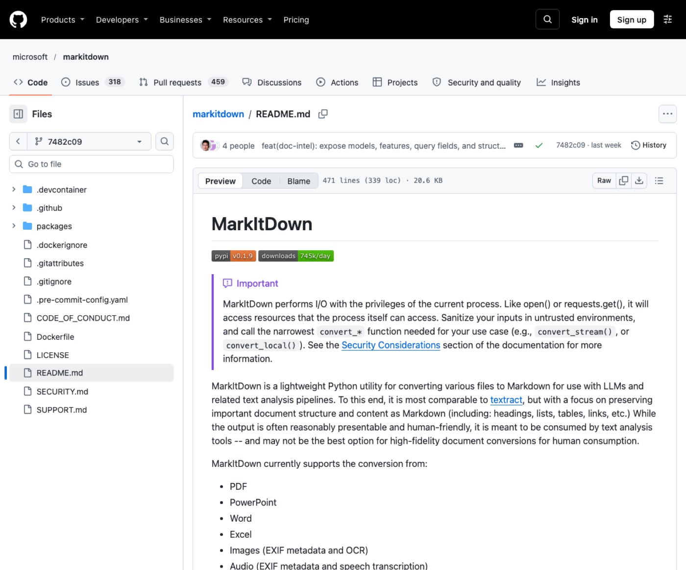
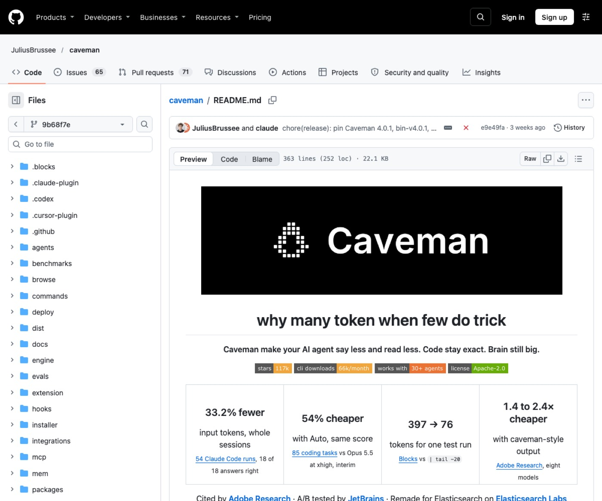
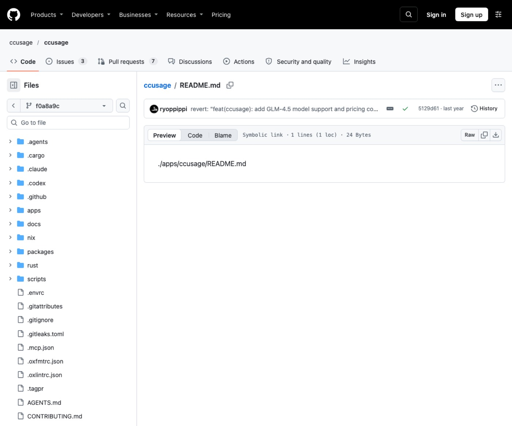
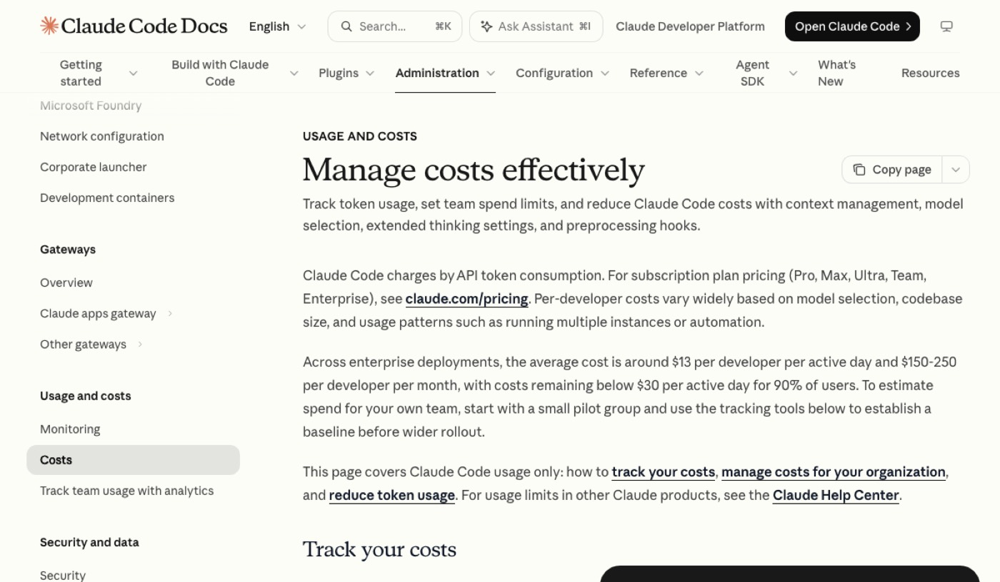

1. 시작 전 준비
- 컴퓨터에 터미널 프로그램을 열어 두세요.
- 사용 중인 클로드 도구가 잘 켜지는지 확인하세요.
- 정리할 문서나 작업할 폴더 경로를 미리 챙기세요.
1단계2. MarkItDown (마크잇다운)
문서 파일을 다루는 직장인이 텍스트 분석에 써요.
파일을 마크다운 글자로 바꿔 주는 도구예요. 불필요한 이미지 토큰 낭비를 막아줘요.

공식 문서 — microsoft/markitdown README 첫 화면
설치 (공식 문서 원문 그대로)
pip install 'markitdown[all]'
쓰는 순서
- 터미널에서 변환 명령어로 파일을 마크다운으로 바꾸세요.
- 바뀐 마크다운 텍스트나 결과 파일을 클로드에 전달하세요.
바로 쓰는 요청문
[보고서.pdf]를 마크다운으로 바꾼 내용인데 핵심 3줄로 요약해 주세요.
변환된 [매출자료.md] 표에서 이번 분기 실적만 뽑아 정리해 주세요.
마크다운으로 변환된 [기획안.docx] 내용 바탕으로 고객 안내 메일을 써주세요.
신뢰할 수 없는 환경에서는 입력값을 검증하고 필요한 변환 함수만 쓰세요.
2단계3. Caveman (케이브맨)
답변이 길어 토큰이 아까운 1인 사업자가 써요.
클로드의 답변과 읽는 데이터를 줄여 줘요. 코드는 그대로 두고 군더더기 말만 깎아내요.

공식 문서 — JuliusBrussee/caveman README 첫 화면
설치 (공식 문서 원문 그대로)
npx @caveman-ai/cli@latest
쓰는 순서
- 터미널에서 설치 명령을 실행하세요.
- 클로드 대화창에서 모드 명령어를 켜고 질문하세요.
바로 쓰는 요청문
/caveman [오류내용] 보고 원인과 수정 코드 한 줄만 바로 줘요.
/caveman [회사소개서] 읽고 핵심 차별점 3가지만 단답형으로 적어 줘요.
/caveman [고객문의내용]에 보낼 짧은 안내 문자 초안을 바로 써줘요.
보안 경고나 되돌릴 수 없는 작업 안내는 압축하지 않고 온전한 문장으로 나와요.
3단계4. ccusage (씨씨유시지)
토큰 비용이 어디서 새는지 찾는 이용자가 써요.
로컬 사용 기록을 모아 날짜별로 보여줘요. 토큰이 낭비되는 구멍을 쉽게 찾게 도와줘요.

공식 문서 — ccusage/ccusage README 첫 화면
설치 (공식 문서 원문 그대로)
쓰는 순서
- 터미널에서 사용량 조회 명령어를 실행하세요.
- 화면에 나오는 일간이나 세션별 토큰 수치를 확인하세요.
바로 쓰는 요청문
터미널에서 ccusage daily 명령어로 오늘 쓴 토큰을 확인하세요.
터미널에서 ccusage session 명령어로 세션별 비용을 점검하세요.
터미널에서 ccusage claude daily 명령으로 클로드 토큰 사용량을 살펴보세요.
비용 수치는 로컬 데이터 기준의 추정치이므로 공식 청구 내역과 다를 수 있어요.
4단계5. /clear (슬래시클리어)
새 주제로 넘어가는 초보 작업자가 써요.
현재 세션 대화 기록과 비용 누적을 비워줘요. 새 작업 때 지난 대화를 다시 읽지 않게 막아요.

공식 사이트 — code.claude.com/docs/en/costs 첫 화면
설치 없이 웹에서 써요 — code.claude.com/docs/en/costs ↗
쓰는 순서
- 기존 작업이 끝나면 대화 입력창을 찾으세요.
- 입력창에 명령어를 치고 새 작업을 시작하세요.
바로 쓰는 요청문
/clear 입력해서 대화 비우고 [신규프로젝트] 안내문 작성 새로 시작해요.
/clear 친 뒤에 이전 내용 잊고 [고객피드백] 분석 작업만 진행해 줘요.
/clear 치고 토큰 누적 털어낸 다음 [새견적서] 양식 작성해 줘요.
새 세션이 시작되면 이전 대화 맥락과 누적 토큰 집계가 모두 초기화돼요.
5단계6. /compact (슬래시컴팩트)
대화가 길어져 토큰이 걱정되는 이용자가 써요.
대화 내용을 간결하게 압축해 정리해 줘요. 작업 흐름을 끊지 않고 문맥 비용을 아껴줘요.
공식 사이트 — code.claude.com/docs/en/costs 첫 화면
설치 없이 웹에서 써요 — code.claude.com/docs/en/costs ↗
쓰는 순서
- 긴 대화 도중에 입력창에 명령어를 입력하세요.
- 압축이 끝나면 이어서 작업을 지시하세요.
바로 쓰는 요청문
/compact 입력해서 지금까지 작업한 [웹사이트구획] 내용 정리하고 다음 단계 가요.
/compact 치고 [블로그원고] 수정 맥락 압축한 뒤 결론 문단 다듬어 줘요.
/compact 실행해서 지난 논의 요약해 두고 [상품상세페이지] 카피 완성해 줘요.
대화가 압축되면 캐시 재구축이 발생할 수 있으니 필요한 시점에 쓰세요.
7. 이어 쓰기 루틴
하나씩 따로 쓰기보다 이렇게 이어 쓰면 편해요.
| 자료 준비할 때 | MarkItDown으로 문서를 마크다운으로 변환해 전달해요. |
| 대화 시작할 때 | Caveman을 켜서 답변을 짧고 핵심 위주로 받으세요. |
| 대화가 길어질 때 | /compact 명령으로 흐름을 요약해 문맥을 줄이세요. |
| 새 작업으로 바뀔 때 | /clear 명령으로 이전 기록을 비우고 새로 시작하세요. |
| 작업을 마친 뒤 | ccusage 명령어로 오늘 쓴 토큰을 점검하세요. |
8. 자주 묻는 질문
Caveman을 켜면 코드나 답변 내용이 왜곡되나요?
코드나 오류 문구는 글자 그대로 보존해요. 불필요한 인사말과 꾸밈말만 줄여서 답해요.
/clear와 /compact의 차이는 무엇인가요?
/clear는 이전 대화를 완전히 지우고 새로 시작해요. /compact는 중요한 맥락을 요약해 대화를 이어가요.
ccusage 비용과 실제 청구서가 다를 수 있나요?
로컬 데이터를 바탕으로 계산한 추정치예요. 정확한 청구 금액은 콘솔 공식 페이지에서 확인하세요.
문서 변환 도구는 인터넷 연결 없이도 동작하나요?
기본 변환기는 로컬 연산으로 처리돼요. 외부 클라우드 기능을 쓸 때는 별도 설정이 필요해요.
9. 공식 링크
이 자료가 도움이 됐다면
매주 새 도구를 영상으로 고르고, 따라 하는 법은 여기에 쌓아요.